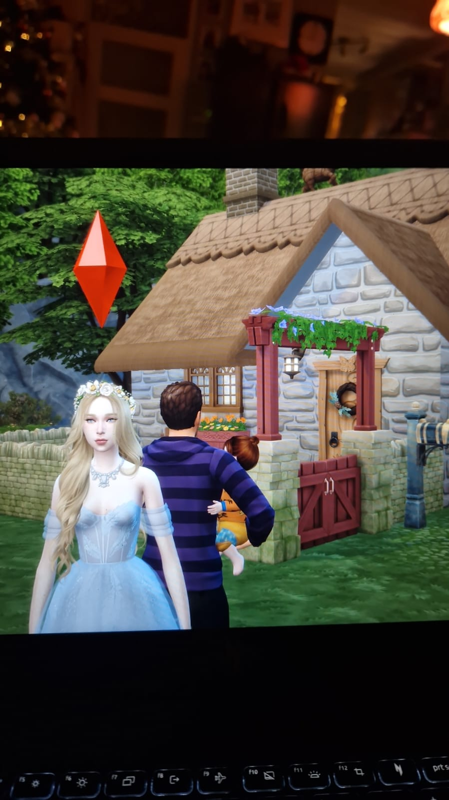
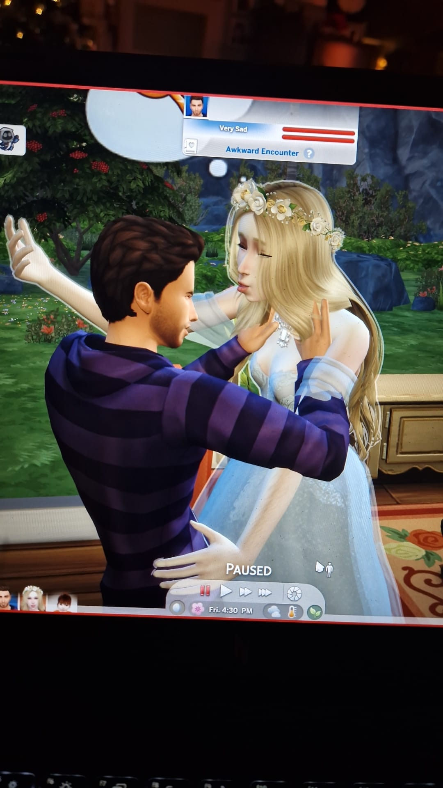

My hobby is playing the sims
I like creating families with twisted stories. There is one called the montgomery family where there are 5 people in the family. The parents, Summer(f), Autumn(f), Spring(m) and Winter(f). The parents believe in traditional gender roles, the males go out and work in the farm while the women look after the house. The girls are only allowed to wear a long, old dress with an apron. They aren't allowed a door for their rooms and their hair aren't allowed to be cut. They also can't go outside the property, ever. One day, in the rain, Summer met a guy called James. To put it simply, they fell in love and she became pregnant. She planned on running away with James but then she got a marriage proposal from James' house which turned out to be from James' father who is very old. Summer freaked out and told her father everything. Her father locked her in the basement of the house, instructing winter who hates her with all her heart to feed her. Winter waited for the baby to be born then stopped feeding Summer. Winter tortured Summer mentally by being violent towards the baby. Summer's last days were filled with hunger and dispair. Eventually summer died. Winter got into an arranged marriage with James and claims the baby "Cecilia" as her child with James.

